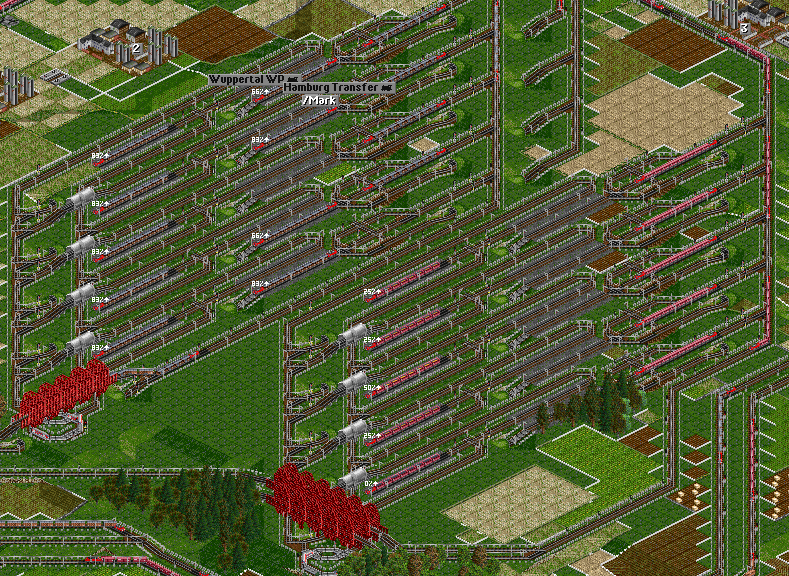

Asynchronous SRNW stations
In PSG 149 we went with an exclusive SRNW (Self-Regulating NetWork) construction. This technique is a bit strange at first, but has some pretty clever ideas and possibilities. Building a single platform SRNW stations isn’t all that difficult when you get the hang of it. But when it comes to multi-platform stations for high-capacity industries, things tend to get very complicated and messy because you need to carefully design it to keep the dummy trains from stealing cargo from one another. This will mostly involve complex systems involving logical gates and more.
In the picture below you can see an example of my asynchronous approach which makes for a very simple but high capacity SRNW station:
[Asynchronous SRNW station from PBS 149]
Original stations:
The biggest cause for the complicated stations are the dummy trains. They have to be synchronized to avoid one stealing load from another. To accomplish this synchronization you would need special constructions and this can get quite complicated and messy, certainly with big stations. Another solution for the synchronization problem is to just make the dummy train a multiple of the normal trains’ length. But this is only useful to some extent, as super long trains/stations aren’t all that efficient.
![[Asynchronous SRNW station from PBS 149]](https://web.archive.org/web/2/http://www.openttdcoop.org/blog/files/blog/2009/07/AsyncSRNW_149.png){kind=link}
General idea of the asynchronous station
To overcome these issues I tried an alternative, asynchronous approach. The idea is basically to make multiple stations, but put them adjacent to each other.
This way, all the stations get their own cargo from the industry(s) and no train can steal from another. By combining this with X-BT’s idea of “abusing” PBS signals, I was able to make the station very compact. It is possible to put two asynchronous SRNW platforms on a three tile width. You would also need ((2 * TL) + 3) tiles of length (even for a single station this is very little).
[Clean example of a single SRNW platform]
![[Clean example of a single SRNW platform]](https://web.archive.org/web/2/http://www.openttdcoop.org/blog/files/blog/2009/07/Async_SRNW.png){kind=link}
Construction
On the image you can see how easy it is to build a station like this. The dummy train only needs two orders to the same station (be sure they are set to the “Far End” of the station). It is necessary that you make the dummy station (at least) one tile longer than the TL to make it reverse and go to the other end of the station. By doing this it releases the piece of crossed track, the real train can go in and start loading. Depending on the train length, one tile might be too little, because the loading/unloading times increase when the TL increases).
Two solutions are possible:
- Make the dummy station longer so it takes more time for the train to start unloading/loading
- Use timetables to specify a specific delay for the dummy train when it is unloading
Also note that the PBS signal is facing in the opposite direction of the loading dummy train. This way the dummy train will reserve the crossing track and block the real trains from entering the station. Some smart use of PBS is used here, since the only safe spot for the dummy train would be in front of the PBS signal (as it’s facing the wrong way), all the way up to the next signal. This means it is possible to use any length of track after the dummy station, but you have to make sure it can be reserved (90° angles can be disabled and won’t work).
Possible problems
This asynchronous approach is somewhat against normal building rules, as you wouldn’t normally build separate stations to increase the transporting capacity for industries. As stated in the wiki an industry gives cargo to the two highest rated stations per cycle. It would appear that you can only use this approach for two platforms, given this limitation. In practice it scales well to more platforms, which is caused by the dummy trains. As there is always one train loading (dummy or real), the stations rating will remain “Excellent”. But, there will be small changes in the rating because of the gap when the dummy train is full and the real train enters the station to start the loading. These small fluctuations apparently are enough for the other stations to get cargo as well from the connected industries.
But not all is perfect. When you want to expand the pickup and add a new station to it, it will not start loading (if it is the third or higher station). This is because the rating of the new station will be 0%, so the industries see the new station as obsolete and ignore it. A simple solution is to (temporarily) connect the station to another (unused) industry, or one that only has a single station serving it. This way the rating can increase and the station can start participating in the asynchronous SRNW station group.
To conclude, an example of a synchronized multi-platform SRNW station which also looks pretty clean, created by Mark: 

More info about SRNW at the WIKI.
Categories: Community News, Public Server
Ammler July 12, 2009 21:37
Nice article! Did you ever see trains turning around on those 90deg tracks?
Anyway, I mssed those stations in the game, those were build when the game was very much over the limit.
planetmaker July 14, 2009 07:41
Nice article!
But I’ve one concern: as far as I know only two stations can or will get cargo from an industry – the two with the best rating. So the system of multiple stations for industrial pickup will fail for more than two pickup stations.
ODM July 14, 2009 17:43
PM, check the bit under possible problems. We checked this before publishing. As a big amount of cargo waiting causes rating to decrease, the two stations being served get a lower rating. At this point, some of the other stations will get cargo. It turns out that these small fluctuations are enough to keep multiple stations served.
Nickman July 15, 2009 11:26
I never saw the trains entering the crossed tracks, but in that game 90° curves were disable so that couldn’t have happened.
And as stated in the article, we did check the station limit and it seemed to work. I will make another test with one big industry instead of multiple ones to check if it also works that way.
Ammler July 16, 2009 12:55
why didn’t you transfer to an other station?